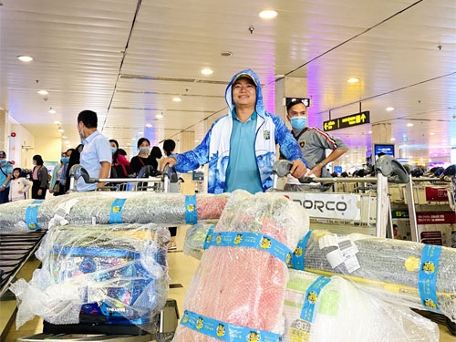
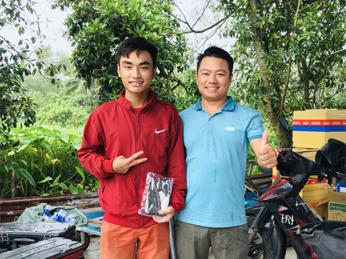
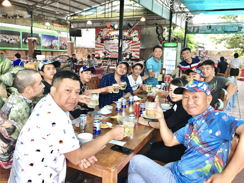

Tìm kiếm
Anh em Vũ Môn rời khỏi Hà Nội ngày tiết trời đổi sang thu. Những cơn gió lạnh đầu mua không khiến anh em thôi háo hức về chuyến du câu miền Nam lần này!

10h30: anh em Vũ Môn có mặt tại sân bay Tân Sơn Nhất, vội vàng đón chuyến xe chạy thẳng xuống Bình Dương. Không quên thưởng thức một bữa trưa ngon tuyệt vời tại một quán ăn ven đường cách Bình Dương chừng 17km. Buổi sáng đầu tiên có mặt tại Sài Gòn anh em chúng tôi đã may mắn gặp được một bác tài vô cùng thân thiện. Không chỉ chạy xe cẩn thận, bác tài còn chỉ cho anh em chúng tôi chỗ ăn ngon, những món nên ăn và những nơi nên đến trải nghiệm khi tới Sài Gòn. Đó là điều không phải đến bất cứ đâu cũng có thể nhận được!
13h00: Anh em có mặt tại Hồ câu Lãng Tử ( Hẻm 1249 đường Lê Hồng Phong- Thủ Dầu Một- Bình Dương). Hồ thả khá nhiều cá rô và chép, xuống đến nơi gặp ngay team Đất Thủ anh em đánh giao lưu cùng SaPham và cần thủ Huỳnh Nhàn( chủ thương hiệu mồi câu Khó Chịu). Như cá gặp nước, anh em chúng tôi cũng tham gia câu cùng cả đội.
Ngay tại chính Hồ câu Lãng Tử chúng tôi cũng gặp được vị khách đầu tiên của Fanpage Vũ Môn Fishing. Người anh em cập nhật được thông tin chúng tôi hiện đang có mặt tại đây nên đã cùng đến và giao lưu. Còn gì tuyệt vời hơn khi ứng dụng livestream đã mang chúng tôi gần nhau hơn. Cuộc giao lưu gặp gỡ tuy không nhiều nhưng cũng khiến anh em chúng tôi cảm nhận được tình cảm của anh em cần thủ 4 phương luôn sẵn sàng đồng hành và ủng hộ Vũ Môn Fishing. Chặng đường tuy còn dài nhưng sẽ luôn được anh em ủng hộ. Đó là những gì mà Vũ Môn luôn mong muốn!

15h cùng ngày, chúng tôi giao lưu cùng anh em ở Hồ. Một cuộc gặp gỡ không hẹn trước, cũng chính là cơ hội để anh em Vũ Môn có thể gặp gỡ và giao lưu cùng những cần thủ “máu mặt” như : Anh Phạm Hoàng Sa, anh Thanh xe tải, anh Huỳnh Nhàn, Đồ câu Lãng Tử, Thích câu đài, Hoàng Tiến, Nguyễn Hoàng..Hầu như tất cả anh em đều tham gia giải câu tranh cup Sapham ngày 11/10/2020. Vậy là anh em đã chạm mặt nhau trên bàn nhậu trước khi gặp nhau trên hồ đấu.

Điều tuyệt vời nhất đối với chúng tôi khi đến với Miền Nam, đó chính là sự hiếu khách, sự thân thiện và nhưng trải nghiệm không thể nào quên.
Còn nữa...!

VŨ MÔN FISHING
Hotline: 0867.58.57.55
Cơ sở 1 ECO : 208 Park River- Ecopark Hưng Yên
 Hotline Chăm sóc KH : 093.66.989.66
Hotline Chăm sóc KH : 093.66.989.66
Cơ sở 2 Hà Nội: Kiot 10- Toà CT9- KĐT Định Công- Hoàng Mai- Hà Nội
Hotline- Zalo: 0862.06.06.18
Cơ sở 3 Hưng Yên: 779 Nguyễn Văn Linh- P. Hiến Nam- TP. Hưng Yên
Hotline- Zalo: 0862.25.1233
Cơ sở 4 Ninh Bình : Phố Đi Bộ Ninh Bình- TP. Ninh Bình
Hotline- Zalo: 033.688.5335